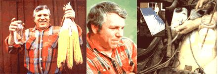

Mr. Lance Crombie of Webster, Minnesota is a farmer... he even carries business cards which attest to that fact. Crombie, however, has a number of sidelines that aren't exactly typical of a tiller of the soil.
Lance is, for instance, a former cancer researcher who holds a Ph.D. in microbiology, the inventor of a low-cost solar collector, a partner in the firm that distributes his invention, the chairman of the Minnesota State Heart Fund, an associate professor of pharmacy at the University of Minnesota, a member of the New York Academy of Science ... and he's listed in Who's Who in the Midwest and Outstanding Young Men in the Midwest.
Lance is also a moonshiner.
A moonshiner? Yep, you read it right. You see, Crombie is the kind of guy who gets things done when they need doin', and he's not at all hesitant to buck the system or throw out the "accepted " answers when he feels that he can find a better solution by himself.
So-when his family's fuel bills became more than their budget could bear-Lance sat himself down, designed a sunpowered still, and began to produce corn alcohol. . . which he planned to use to heat his home and power his farm machinery.
It wasn't long, however, before his experiments brought about a head-to-head confrontation between Crombie and the Treasury Department's Bureau of Alcohol, Tobacco, and Firearms ... the "revenuers".
Surprisingly enough, Lance won that battle (he obtained permission to operate his still) and-in the process-he became a spokesman for the alcohol fuel "movement" . . . a group of people who feel that our continued dependence upon fossil fuels is the quickest possible route to energy bankruptcy, and that agriculture ought to be given the chance to take a whack at solving America's fuel problems.
In order to find out more about Crombie, and about alcohol's use as a fuel, MOTHER sent staffer Bruce Woods to the Gopher State to interview the Minnesota Moonshiner. While there, Bruce managed to wedge some questions in among the corn combining, volunteer work ' and alcohol "public relations" activities that had kept Lance awake for the previous 30 hours.
In this transcript of Bruce and Lance's exchange, you'll discover that Lance Crombie is-indeed-a farmer ... but a farmer who-quite possibly-holds the key to individual total energy self-sufficiency in his hands.
PLOWBOY: Lance, it's obvious from everything that's gone on since we arrived at your home-the constant phone calls, the people stopping by for information and advice, etc. -that your distillation experiments have attracted a lot of attention. Just how did a Minnesota corn farmer wind up in the middle of this home-produced alcohol controversy?
CROMBIE: Well, to go back to the very beginning, I was born and raised on a dairy farm in North St. Paul, Minnesota. By the time I got out of high school I'd milked one heck of a lot of cows, so I decided to go to college ... to try my hand at something other than udders for a while. I eventually graduated from the University of Minnesota with a Ph.D. in microbiology and a biochemistry minor. That was in the spring of 1968.
I went into lab work after graduation and was employed-for the next few years-doing research in the areas of immunization and cancer prevention. It wasn't long, though, before I began to realize that the job market for Ph.D.'s was getting pretty glutted ... there were more people holding the degrees than there were positions for those men and women to fill. So, since I really wanted to get back to farming anyway, I bought a small place here in Webster in 1974. I've been able to expand it through the years, and now I run a little more than 600 acres of corn and wheat. I plan to switch some of it over to sunflowers next year and then maybe I'll make some money from farming for a change.
PLOWBOY: And after you returned to farm life you became interested in solar energy?
CROMBIE: I had to! You see, while we were adding to our acreage, we lived in a little house. My family was too big to stay in such cramped quarters for long, though, so I looked around and eventually found this monster home here. It had been a parish house, and the church offered it to me for $200 ... on the condition that I move it.
Everybody I talked to told me that it would be impossible to transport a brick house of this size all the way out here to my property, and I always tend to get a little riled when I'm told that something's impossible. It took me a while, but I finally found a company that was willing to tackle the job. And, although those guys lost money on the contract, the publicity generated by the move brought them a lot of new business.
Anyway, the house became our bicentennial project. We had built a new basement for it before we moved it out here, and we went on to refurbish the whole structure ... all of which added about $40,000 to the original $200 price tag.
And then the winter of 1976-77 came along. Our heating bill for January alone was over $450, and it had been running right around that figure for months. I didn't have that kind of money to burn. In fact-what with the house expenses on top of several years of non-profit farming- I didn't have much money at all! So I did a little research, gave the problem some thought, and designed an inexpensive, temporary, all-plastic, inflatable solar collector ... just to help us survive the winter without going broke.
The thing worked fine, too. I mean, it really helped, although we would have needed a number of collectors to heat this house. My brother and I decided that other folks might be interested in a solar heating system that wouldn't cost an arm and a leg to set up, though, so I redesigned the collector- made it more durable-and got a patent on the design. Then we formed a company called Chicago Solar and started traveling to various energy shows to market the units.
Whenever I demonstrated the collector, somebody would be sure to ask me, "But what do you do when the sun doesn't shine?" After a while I started telling 'em that I'd perfected a method of collecting moonbeams and that I'd supply a free bottle of moonshine with every solar collector I sold ... because I didn't want my customers to get cold at night.
That joke, you see, started the whole alcohol thing ... because it set me to thinking. My heating bills were still high, of course, and I needed to come up with something I could use to augment our solar heaters ... or to fill in for them on cloudy days and such.
At the same time, I had about 45,000 bushels of corn sitting out there in my bins. It was worth around $1.60 a bushel on the market, and-since it had cost me almost $2.00 a bushel to grow- I wasn't about to sell the grain at that price.
So, I put two and two together and decided to turn all that corn into alcohol. I figured that I could use the fuel to heat my house, run my tractors, and all that.
There didn't seem to be much information available on alcohol stills per se, but I managed to find out a good bit about fermentation ... which is just yeasts and bacterial action, stuff that I was pretty familiar with. So I built a crude little solar still, whipped up a batch of mash, and was ready to go.
I wasn't looking to get into trouble. In fact, I even went so far as to talk to the local sheriff before I started distilling. I asked him if he thought it would be OK if I experimented with solar stills and so forth ... and he said that he didn't think I should.
But-one Sunday last March-I went ahead and set up the contraption anyway. 1 ran a batch of mash through the still and produced some crude 60- to 100-proof alcohol-ethyl hydroxide -just to test my design and find out what it could do.
Two Treasury Department Bureau of Alcohol, Tobacco, and Firearms agents-escorted by the sheriff-dropped by to see me the very next day. We had a three-hour "discussion"really going back and forth-about the energy crisis, the cost of fuel, all sorts of things. The agents got pretty hot a couple of times, too, because 1 thought the whole situation was ridiculous and I kept needling them. I told the feds, for instance, that I was going to have them charged with armed robbery ... after all, they had guns and they were trying to take my property. Eventually, they did decide that my setup was a still and though I was never charged with anything-the agents confiscated the whole works.
PLOWBOY: Did you make any effort to get your still back from them?
CROMBIE: Oh, yeah! I kept in pretty close touch-by phone and letters with the ATF Bureau. I tried to convince those guys that they might as well return my solar still, 'cause if they didn't I was just going to make another one. About a month later, though, the Bureau sent me a letter which said, in effect, that my still wasn't a still! They had decided that the design was much too primitive-that it was sort of like counting on your fingers as compared to operating a computer-and that it probably wouldn't work anyway.
So I drove right over to the ATF office in Minneapolis. The whole place went quiet when I walked in. They don't get to make many moonshine busts around here anymore, I guess, and everybody in the place knew about the confiscation, and of course-about me.
PLOWBOY: The Untouchables ride again.
CROMBIE: Yeah, exactly. I told them-since they'd decided my "culture warmer" wasn't a still-that they had no right to keep it. (I called it a culture warmer-warming a yeast culture is a step used in producing highquality feed-so they wouldn't get all upset again.) I was told that I couldn't have it because it was a container for illegal mash. So I politely suggested they dump out the mash and then return my invention to me, because I might want to patent it.
In order to get the still back, the ATF people told me, I'd have to post a bond for a hearing. (They claimed they were going to destroy the device if I didn't, but I think they just wanted to play with it.) Well, I only had about $18 invested in the thing, so it hardly seemed worth posting a bond. I talked to a few attorneys-to see what my options were-and got just about nowhere ... until one of them suggested that I apply for an experimental distilled spirits plant permit. So I did just that ... I mailed in my application on July 12.
PLOWBOY: Since other folks might want to follow your lead, please tell me how you went about applying for that permit.
CROMBIE: Sure. I want other people to apply. I wrote to the Office of the Director, Bureau of Alcohol, Tobacco, and Firearms, 1200 Pennsylvania Avenue, Washington, D.C. 20044. 1 simply asked for a special variance-for a period of two years-of sections 201.63, 201.64, 201.65, and 201.66 of Title 27 of the Alcohol, Tobacco, and Firearms Code.
I wrote, "It is my desire to test several sources of fermentable carbohydrates (corn, wheat, barley, and cellulose) with various bacteria and yeasts. I plan to build and experiment with solar stills of differing designs, efficiencies, materials, and costs ... and to compare these with a classic boiling still. I will test farm uses of alcohol, including use in an oilfired furnace, in diesel engines, in a corn dryer, and in automobiles. "
Now using homemade alcohol in cars is a touchy situation because of the state and federal road taxes, which apply to any fuel powering any vehicle on public roads. Minnesota still has such a tax-it runs about 11V a gallon-although some states no longer levy road taxes on alcohol.
For that reason, I concluded my letter by saying that I would use this fuel on my farm, and that I planned to sell the solid fermentation by-products to my neighbors as hog feed. I assured the Bureau that the only waste matter produced would be carbon dioxide, and that all liquids would be used and recycled.
I received my permit last August 12, and now I can make "legal" alcohol for two years. Of course, this ATF approval is subject to a few conditions: I will- if I choose to sell any of the materials that I produce -need to post a bond to cover 15 days' worth of production. I also have to describe my plant ... which will be two solar stills, hooked up in series, that feed into a storage tank.
PLOWBOY: The second still, then, will further refine the alcohol produced by the first one?
I had about 45,000 bushels of corn sitting out there in my bins.... So, I put two and two together and decided to turn all that corn into alcohol.
CROMBIE: Right. It'll allow me to produce a higher-proof fuel. I've written back to the Bureau a few times, just to see if I could get them to drop the bond requirement, but they won't back down on that. The bond will cost me $25-as near as I can figure it-which puts the cost of the permit (including postage and the like) right around $30.
What's important about my permit, though, is that it means that anyone can make his or her own alcohol ... if that person cooperates with the appropriate agencies. Personally, I think the permits are unnecessary and that the requirement will be dropped. It may take a lot of pressure to do it, but I think the law will have to change.
PLOWBOY: You mentioned that you plan to sell your mash byproducts to hog farmers ... can you tell me more about that mash-based feed?
CROMBIE: It's available on the market ... all of the big distillers produce it. The feed is called distiller's dried grains and solubles (DDGS). It's nothing new.
For that matter, there's nothing new about most of what I'm doing. Dr. William Jay Hale of Dow Chemicals predicted- way back in the 1930's-that we would one day be using alcohol as a fuel. He said that all we, as a nation, would have to do is turn the farmers loose ... make it profitable for them to grow starch crops for alcohol production. Hale calculated that it would take about 56 pounds of mixed grains to produce five gallons of "farmer's alcohol". This would leave 26 pounds of residue which, he said, would represent more nutritional value than was contained in the original grain!
In fact it's been claimed-I haven't had time to check the figures-that a group in Iowa has shown that hogs will gain weight up to 20% faster-when fed these distillation byproducts- than they would on the same amount of whole grain.
PLOWBOY: That's not hard to believe. The University of Nebraska has demonstrated that young cattle fed on DDGS gained weight 12.8% more rapidly than did a control group fed equivalent quantities of grain.
But what about the still that produces this feed while it's perking out alcohol? Can you tell me how your little device works?
CROMBIE: Sure. This one here is about the simplest of several designs I've played with. It's just a 4' X 8' piece of plywood-any type of rigid form would do-that has 1-1/2-inch wooden sides around its edges. The inner surface of the shallow box is painted black, or covered with black plastic, and then lined with a black cloth which absorbs the liquid as it trickles down. Of course, the dark surface heats up and causes the mash to evaporate rapidly.
PLOWBOY: The alcohol evaporates before the water does?
I told the feds ... that I was going to have them charged with armed robbery . . after all, they had guns and they were trying to take my property.
CROMBIE: Yeah, It vaporizes much more rapidly than water does. And, once the alcohol is in its vapor phase, it condenses on the still's clear cover (which could be glass, plastic, or fiberglass), adheres to the cover, and flows down the surface, ... because the still is set up at a slight angle.
The alcohol then drips off the lid and into the bottom of the still ... below a one-inch-high partition which prevents any liquid mash from running into the holding area and contaminating the fuel.
PLOWBOY: How much can one of these little I' distilleries" produce on a sunny day?
CROMBIE: Just as a rough estimate, I'd say that it'll turn out about eight to ten gallons a day, depending upon the mash mixture used.
PLOWBOY: What types of mash have you experimented with?
CROMBIE: My first concoction included corn, molasses, water, and baker's yeast ... I don't even know what the concentrations of each ingredient were. I let it ferment for a few days, until it smelled sort of like beer, and then poured it into the still.
Since that first attempt I've tried wheat, straight sugar, oats, and commercially available cereals (which work great because they have so much white sugar in 'em). Ideally, you want between 12% and 15% sugar in your mash. In fact, I've found that the mixture itself isn't all that important as long as it makes sugar available to the yeasts.
PLOWBOY: Do any of these mash materials require special preparation?
CROMBIE: Some of 'em. If you start with corn, for instance, you have to break it down to "free" Its sugar. This is usually done by cooking it or by adding acid to the mash. On a farm plant, though, corn could be most easily prepared by malting ... which simply means sprouting the kernels. When the corn sprouts, its enzymes go to work on the starches and produce the necessary sugar.
PLOWBOY: One of the major advantages of this form of energy production seems to be the fact that most any organic material can be used to make alcohol.
CROMBIE: Yeah, it's incredible! Of course, some substances require a few extra steps before you can ferment 'em. You could even use cellulose-waste paper, wood, that sort of thing-for example, by introducing bacteria, Trichodermaderde(which produce enzymes that break the cellulose down into glucose), into the mash. If you have a sugar product, though-say, certain fruits and pumpkins, sugar cane, or sugar beets- you can just dump it in a container and ferment it.
In fact, sugar beets would be the ideal crop for a person who has land and wants to produce his or her own fuel. If that farmer could grow five acres of the beets, dump 'em in a tank, and then distill the fermented mash, he or she could probably produce a full year's supply of alcohol.
PLOWBOY: I'm curious about some of the uses to which you've put this homemade fuel. How, for example, did you go about converting your car so it could run on "corn likker"?
CROMBIE: There are a number of ways to switch an auto over to alcohol. About the easiest method is to put a "T" fitting into the fuel line-like I've done-and add an auxiliary fuel tank which will hold a small amount of gasoline. Then you just start the car on gas, and-after it's all warmed up-flip the "T" switch to shut off the gas flow and supply alcohol to the engine. The car will run just fine. Now, if you could design an alcohol tank in such a way that its contents would be warmed by their proximity to the engine, the system would work even better.
PLOWBOY: Why is this preheating necessary?
CROMBIE: Because alcohol doesn't vaporize as readily as gasoline does. You don't have to heat the alky, though. You can produce the same effect by modifying the car's carburetor. If, for instance, you enlarge the jets and put screens in 'em, or use a fuel injector, the end result will be the same ... the liquid will vaporize easily and away you'll drive.
PLOWBOY: Is it that easy to convert an oil heater to run on alcohol?
CROMBIE: Sure. Anything down to a 70%-alcohol/30%-water solution will burn beautifully in an oil furnace. All you have to do is increase the size of the heater's fuel nozzle about 25% -a 90-degree nozzle works best and then decrease the air adjustment until the flame is "tuned in". Once you do that, you can just pump your alcohol into the furnace. It'll burn with a clean, hot, almost invisible yellow fire.
PLOWBOY: I've seen your furnace operate on alcohol-very effectively, it seems-but how efficient is the corn product as compared to fuel oil?
CROMBIE: Let me explain that in terms of the 70% (140-proof) alcohol that I burn ... since even the simplest still can produce a fuel of that quality. Now, fuel oil contains a substantially greater number of Btu's, per given amount, than alcohol. This means-in theory-that you'd have to burn a whole lot more alcohol to produce the same heat that a smaller amount of oil would provide. And that's exactly what would happen, too, if you burned pure (200-proof) alcohol. But as I said, the 70% alky solution contains 30% water. So you can "bum" that water along with the alcohol and still have a very hot flame. The water doesn't actually burn, of course, but you do end up consuming less pure alcohol than fuel oil to get the same amount of heat. And, as you saw in my furnace, the "corn likker" burns cleaner, too. It's a more "housebroken" fuel than oil is.
Incidentally, that water content comes into play when you compute the miles per gallon of alcohol used in autos, also. You might need more alcohol than gasoline to drive a certain distance, but you can run an automobile engine on a 60%-alcohol/ 40%-water solution ... whichbecause the water extends the alcohol-can actually give pure alcohol an mpg advantage over certain types of gasoline.
PLOWBOY: The oil establishment has tried to discount the value of alcohol fuels by stating that more energy is used in the distillation process than is contained in the finished alcohol. It would seem that your solar still takes the wind out of that particular argument.
CROMBIE: I've seen figures which show that the energy expended in the production of 190-proof alcohol fuel makes up about 40% of the cost of the entire distillation process. But solar energy is virtually free. And that means, if you can wait for the sun to shine-which isn't much of an inconvenience to a home alcohol producer-you can use a solar still and save 40% on the cost of your fuel right there. That's a big plus in my book.
PLOWBOY: Do you feel, then, that homemade alcohol can be a major energy source? For instance, can the average American farmer produce alcohol for his or her own use and for sale at a profit?
CROMBIE: Definitely. In fact, I think that alcohol is-in many cases- a more important fuel source than solar energy or any of the other "alternatives". The United States in general-and our agricultural system in particular- needs a liquid fuel. After all, we're not going to be able to go back to horse-drawn plows and so forth without cutting our production drastically. We have to be able to use our tractors because they're the keys to our efficiency. And we can't run these farm implements on coal or geothermal energy or anything like that.
And farmers are in a better position than anybody to produce this "new" liquid fuel. Just take a look at the typical corporation. What does it take for one of those firms to manufacture anything? They have to have a president, a board of directors, secretaries, a corporation headquarters, stocks and stockholders, and any number of other people and items that cost money and add to the price of the goods produced.
The farmer, on the other hand, has cheap labor (in my case, anyway, that means mostly myself and my family). Almost all of the equipment that he or she would need is stuff that's on the farm already, the farmer's transportation costs wouldn't amount to much, and a farm has no bosses, no unions, none of that expensive organization. Can farmers compete with Mobil Oil in energy production? Damn right they can! Of course, Mobil Oil-or any of the fuel companies-could produce alcohol, too. But they'd have to buy our corn, wheat, and so forth to do it.
PLOWBOY: Which would help stabilize crop prices.
CROMBIE: That's right, that's right ... and just in the nick of time, too. Last year, for instance, I raised the best corn crop of my life, about 140 bushels per acre, and I lost thousands of dollars on that harvest because the market prices were so low. If the corn were being converted to alcohol, though, the demand would always meet or exceed the supply, and we'd have prices for our crops that we could count on from one year to another.
PLOWBOY: Now that you have your permit, you can take steps to bring that new agricultural market into being. How about it? Where do Lance Crombie and his incredible solar still go from here?
CROMBIE: I'm going to convert one of my outbuildings ... make its roof into one big, double-stage solar still that will produce between 10,000 and 20,000 gallons of alcohol a year.
PLOWBOY: How much will it cost you to set up that rooftop distillery?
CROMBIE: I've got it all figured out. You see, I have the buildings and the storage tanks already- most any farmer has spare outbuildings and a tank or two lying around-so the job won't involve much more than adding some clear fiberglass and a pump. The entire system won't cost me more than $1,500.
Even if somebody were to set up a similar still from scratch -a plant that would produce at least 10,000 gallons of alcohol a year-he or she could buy all new materials and still be ready to roll for somewhere in the neighborhood of $5,000.
PLOWBOY: That's a reasonable initial investment, but what would the economics of running such a still be? Since each different mash base would cause the figures to vary, let's stick with corn for the purpose of estimation.
CROMBIE: OK, I've done more pencil pushing with corn than with anything else, so that's easy.
Right now I could sell the DDGS feed produced by fermenting a bushel of corn for around $2.00 ... which is about what it costs me to grow the corn. That same bushel will yield approximately five gallons of alcohol, though, and I can sell that for at least 500 a gallon. So, my gross income from one bushel of corn would be around $4.50. Now, I figure that the alky costs me about 100 a gallon to produce. If we add that 500 production cost (for five gallons) to the $2.00 that I spend growing the corn, we get a total expenditure of $2.50. That means I can make a $2.00 profit on every bushel that I ferment!
And there's another angle, too: The gasohol people are buying alcohol for around $1.30 a gallon, to mix with gasoline. Unfortunately, they need anhydrous alcohol, 200-proof stuff, because anything much below that percentage won't mix with the gasoline if it contains any water at all. But by forgetting the gasoline altogether and just burning a mixture of alcohol and water in the first place, I don't need 200-proof "corn squeezin's" anyway. The 140-, 160-, and 180-proof batches I'm makin' are plenty good enough for my needs.
PLOWBOY: Those are very impressive facts and figures. And I know they've led you to formulate some ideas about the economics behind the alcohol tax laws (the laws that were responsible for your run-in with the Alcohol, Tobacco, and Firearms people). Could you explain these views and tell me how they relate to the future of home-produced alcohol?
CROMBIE: OK, here are the facts: The United States government takes in approximately seven billion dollars a year in revenue from the alcohol tax. But-what with enforcement, bureaucratic red tape, and so forth-the government spends at least five billion dollars annually collecting those taxes. So, as taxpayers, our net take-home pay from alcohol taxation is about two billion dollars a year.
Now, during 1978 the government paid farmers- including mea total of more than 22 billion dollars to not grow crops! So, if we eliminate the tax on booze and get rid of all of the farm subsidies-which would allow farmers to go into total crop production and make alcohol out of the surplus-the taxpayers, and the nation, will have a net income gain of 20 billion dollars ... without even taking into consideration the decreased dependence on imported oil, the fact that we'll be switching some of our economy to renewable fuels, and so forth. It seems like a commonsense move to me.
PLOWBOY: What you're proposing, in effect, is a radical rethinking of the role of the farmer in this country.
What's important about my permit ... is that it means that anyone can make his or her own alcohol ... if that person cooperates with the appropriate agencies.
CROMBIE: Exactly. You see, I feel-and this isn't just my idea, there are a lot of people who are thinking this way-that it's time for American agriculture to be set free, to be allowed to fill the dual role that it's capable of . Sure, farmers can produce food, they've always done that ...
PLOWBOY: And food is just a form of stored energy.
CROMBIE: Right. But now, at the same time, those farmers can convert some of their extra "vegetable energy" into valuable liquid fuel.
And alcohol is the easiest to produce, least dangerous, most practical liquid fuel imaginable. It can be manufactured without a lot of expensive equipment and with very little specialized know-how. About all anyone really needs to learn is how to make a mash, and people could just fiddle around and figure that out for themselves ... or get the basic information from any library that has beer- or winemaking books. Home alcohol plants are loaded with advantages, too. They can be just about any size, they produce no pollution, and they aren't likely to explode or anything like that ... especially if they're solar powered.
Just imagine! The American farmer has always overproduced everything that he or she has tried to grow. However, if we put that farmer in the energy business (or, actually, recognize that agriculture has been an energy producer all along), before you know it there'll be so much fuel around that we'll have to have federal price supports for gasoline! Hell, we might even be able to buy Los Angeles back from the Arabs.
PLOWBOY: But, as you've said, agricultural alcohol production isn't a new idea. Why hasn't something been done before now?
CROMBIE: I guess the main reason is that the whole concept of alcohol as a fuel has never been promoted ... not by the government and certainly not by the oil companies. SUB, although you don't hear as much about alcohol as you might about the other forms of alternative energy, this fuel has already captured the interest of a large group of people.
You wouldn't believe the number of folks who are planningas soon as possible-to construct 50- or 60-million-dollar plants ... installations that could produce as much as 100,000 gallons of alcohol a day!
And there are other things that could swing the public toward this fuel, too. For instance, MMT-methylcyclopentadienal manganese tricarbonyl (which is an octane-boosting additive used in unleaded gas) -has been found to be a pollutant and to be harmful to catalytic converters. It's supposed to be removed from the market any day now. And alcohol is the only alternative-at this point anyway-that has been approved to replace MMT.
PLOWBOY: is there enough alcohol produced today to fill that need?
CROMBIE: No, not yet, but you'll be amazed by what's going to happen in the near future. Five years from now people will look back and wonder where all the alcohol plants came from. The fact is that everyone I know who understands anything about alcohol is trying to build a plant.
PLOWBOY: And why haven't we heard more about this groundswell?
CROMBIE: Because the public isn't interested! Most people don't know that alcohol burns well enough to fuel cars and heat homes, for one thing. And for another, folks just don't believe that it's possible to get a permit and actually produce alcohol. We've got this crazy stigma on moonshining, on top of an absolutely ridiculous law that says we can't make this liquid fuel.
The public Is allowed to make all the methane it wants. People are free to use solar power, wind power, small hydroelectric power, and they're free to buy oil from the oil companies. Those firms have made an awful lot of money in the past, but now we've got a chance to decentralize liquid fuel production.
Think of the possibilities of having one alcohol plant in every township, or to supply any one small area. You see, the service range of these plants would be dictated by transportation costs. The most economical service area for an agricultural plant-as best I can figure-would be within a 40-mile radius of the distillery. These "neighborhood" outfits could be run cooperatively, or on a family-business basis ... there's room for everybody!
And the effects that this decentralization could have on our energy supply, or on our balance of trade, are incredible.
Take all that damaged grain we ship overseas, for instance. We could use that moldy stock for the production of alcohol, and then ship quality grain overseas and sell it at a premium price. As it is we're peddling damaged merchandise, and we're not making any money or international goodwill from the transaction.
PLOWBOY: And the groundwork for a system of small-scale alcohol plants is being laid today?
CROMBIE: Yeah. Some of 'em are already in operation, and others are being organized all over the country. Believe me, gasohol-which is about the best-known side of the alcohol movement-is just the tip of a very large iceberg. People are getting involved in this, doing things on their own.
That guy who was around here today, for example, produces sorghum molasses down by the Iowa border. He drove all the way up here just to give me some of the stuff ... so that I can test it and see how well it'll produce alcohol. He wants to set up a plant as a sideline to his sorghum operation.
PLOWBOY: The potential is certainly there . . . molasses should make an excellent mash. But what about you? Do you have any personal goals concerning this alcohol movement?
CROMBIE: All I want to do is make enough alcohol to run my farm and heat my house, with some left over to sell for a profit at a competitive price.
And I'd be really pleased if your magazine -through this article -could convince even a hundred more farmers to do the same thing ... to just go ahead and start making alcohol for themselves.
PLOWBOY: What advice would you give to those hundred farmers?
CROMBIE: First, I'd tell 'em to learn all they can about basic fermentation rules and techniques. Then they should write to the Bureau of Alcohol, Tobacco, and Firearms and make a formal application-in triplicate-for a permit to make alcohol fuel and DDGS feed for their own use and for sale.
I can sum up my advice this way: Cooperate with the government agencies, because you don't have much choice right now. Be out front, tell 'em what you're going to do, and go ahead and do it.
Then, just set your still up on the front lawn, lean back, and let the sunshine make your moonshine!
AN "AGRICULTURAL ALCOHOL" ENERGY POLICY
During the course of the accompanying interview, Lance Crombie suggested that MOTHER contact Mr. Robert Soleta, the Agribusiness Representative to the Minnesota Department of Economic Development and a proponent of alcohol fuel. She did so, and Mr. Soleta offered these opinions on the role that agriculture should play in future energy production:
First of all, the United States government has to realize that food production and energy production are synonymous. The present policy of letting the farmer produce as much food and feed as the market demands, and then forcing him or her to shut down-to "set aside"acres of potential energy, is waste of the worst kind.
Agriculture is in the happy position of being the only energy producingas opposed to energy finding-system around. Federal support of farm produced alcohol could turn this next decade into one of the most promising periods in the history of our country.
The recognition of fuel alcohol as a viable energy source would be an event equal in importance to the discovery that soybeans can be crushed to produce soy meal and soy oil. Prior to that breakthrough in 1940, soybean farmers grew their crops for hay alone. But, largely as a result of the increase from one possible soy product to three, the acreage planted in this crop rose from 4 million acres in 1940 to over 60 million in 1978! And what soy meal and soy oil did for the soybean, alcohol and DDGS feed can do for our starch grains.
In order to help bring about this "revolution", the proponents of agricultural alcohol propose the adoption of a commonsense, two-point energy policy, as follows: [1] We must identify all sources of energy as either renewable or nonrenewable, and [2] we must make the use of our renewable sources both politically and economically advantageous.
Our energy credit is running out, and our economic credit isn't in much better shape. But these two simple rules could put the United States back on the road toward living on its income.
EDITOR'S NOTE: Lance Crombie has agreed to work with MOTHER as she experiments with-and, if possible, improves upon-his solar distillation process. To prepare for that careful testing and evaluation, MOTHER's researchers have already applied for an experimental distilled spirits plant permit. And, whether or not that permit is granted (if it's not, we'll just follow Lance's progress all the more closely), this very important subject will receive a thorough MOTHER-type going-over in the months to follow. Stay with us on this one ... we'll have more information on home-produced alcohol-including, we hope, plans for a solar still that you can build yourself-in the near future.
|
 STAFF PHOTOS |
|
|